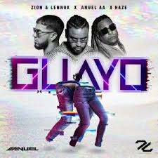

“La música es una de las expresiones creativas más íntimas del ser, ya que forma parte del quehacer cotidiano de cualquier grupo humano tanto por su goce estético como por su carácter funcional y social. La música nos identifica como seres, como grupos y como cultura, tanto por las raíces identitarias como por la locación geográfica y épocas históricas. Es un aspecto de la humanidad innegable e irremplazable que nos determina como tal”
Zion & Lennox, Anuel AA, Haze - "Guayo"
Tu navegador no implementa el elemento audio
Sech - Otro Trago ft. Darell
Tu navegador no implementa el elemento audio